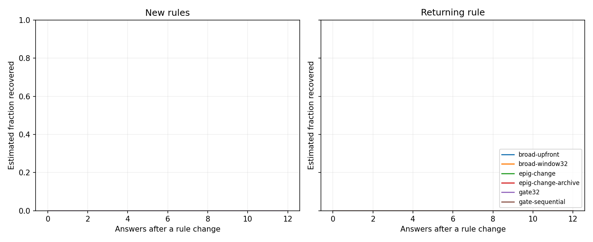
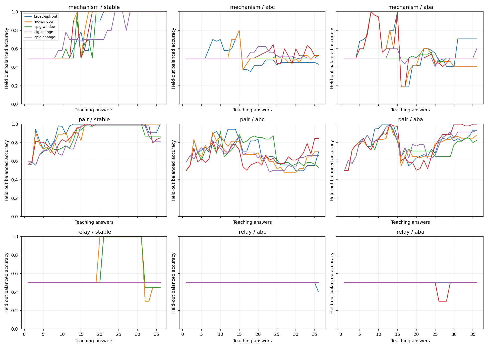
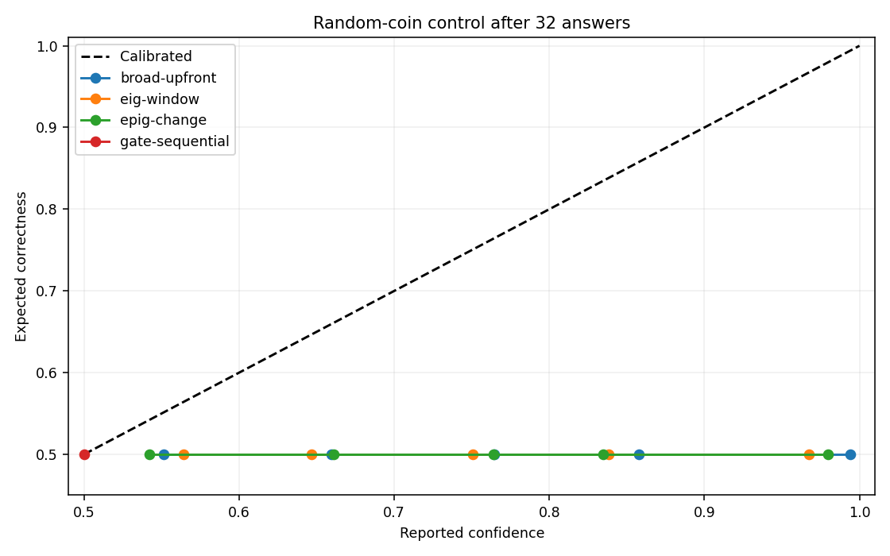
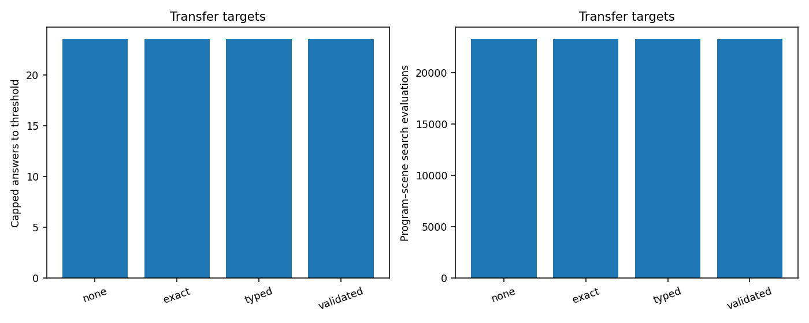

163 task runs; 5,880 newly acquired answers; 5,880 processed answers including validation reuse. 163 checkpoints verified. 0 partial blocks excluded from paired analysis.
These experiments compare probability updates, question selection, changing rules, and reusable relational templates. Every symbolic proof is conditional on its proposed program. The experiments do not establish general intelligence, unrestricted concept invention, or the benefits of embeddings.
EPIG uses only the permitted teaching-input distribution. Long evaluation paths remain outside learning and question selection. World rules and feedback noise are evaluator-owned. Candidate generation uses a fixed 10% noise ranking heuristic in every new condition; the probability updater integrates its separate noise grid. The resulting probabilities are conditional on the bounded searched bank, not an exact posterior over all programs.
The change model retains at most 32 run-length branches and records discarded mass. Stochastic-model weight cannot distinguish all random processes from missing explanations. Capped costs retain failures at their available horizon; recovery fractions must be read alongside costs. Confidence plots use expected correctness for stochastic controls.
Accuracy averages held-out balanced accuracy over the full teaching trace. The final_accuracy field in the CSV and JSON averages the final 20 answers. Success requires at least 90% accuracy for ten consecutive answers; failed attempts retain their available horizon in capped costs.

Kaplan–Meier descriptive curves. Unrecovered transitions are censored at the next change/end; phase durations vary. Censoring independence is an assumption, so read curves with observed recovery fractions and capped costs.
| Library | Repeated libraries | Candidate records | Promoted records | Targets whose final program uses a concept |
|---|---|---|---|---|
| exact | 1 | 0 | 0 | 0/2 |
| none | 1 | 0 | 0 | 0/2 |
| typed | 1 | 0 | 0 | 0/2 |
| validated | 1 | 0 | 0 | 0/2 |
Counts include repeated world/noise/seed runs. Only the validated condition has a predictive promotion gate. All conditions separated by feedback noise (CSV).
Post-hoc descriptive diagnostic added after inspecting the complete core results. It measures public teaching-graph size and distinct questions for every relay condition. Four objects is the largest permitted teaching graph, including broken chains; it is not a label of a successful three-link path. These associations do not establish why a policy generalizes better or worse. No experiment settings were changed. Per-run coverage measurements (CSV); aggregate measurements are in analysis.json.
| Regime | Learner | Four-object questions in first 32 answers | Distinct teaching pool visited in first 32 answers |
|---|---|---|---|
| aba | broad-upfront | 15.6% | 75.0% |
| aba | eig-change | 15.6% | 75.0% |
| aba | epig-change | 34.4% | 83.3% |
| abc | broad-upfront | 9.4% | 50.0% |
| abc | eig-change | 25.0% | 75.0% |
| abc | epig-change | 43.8% | 66.7% |
| stable | broad-upfront | 34.4% | 66.7% |
| stable | eig-change | 9.4% | 41.7% |
| stable | epig-change | 9.4% | 58.3% |
Research targets are assessed below on the completed sample. Passing a numerical target is not a statistical guarantee; all paired intervals and failures are retained. Transfer targets include common source and validation acquisition costs, including shadow search. Reliability guardrails allow at most 0.02 accuracy loss, 0.01 Brier increase, and 0.02 nats log-loss increase.
| Target | Condition | Met in this sample | Measurements |
|---|---|---|---|
| recovery | aba | False | {"relative_cost_reduction": -0.0, "stable_accuracy_guardrail": false} |
| recovery | abc | False | {"relative_cost_reduction": -0.0, "stable_accuracy_guardrail": false} |
| random-calibration | broad-upfront | False | {"brier": 0.461308062900449, "confident_coverage": 0.84375} |
| random-calibration | broad-window32 | False | {"brier": 0.4604870644216307, "confident_coverage": 0.8359375} |
| random-calibration | eig-change | False | {"brier": 0.4154578725292576, "confident_coverage": 0.6875} |
| random-calibration | eig-window | False | {"brier": 0.4298700005255024, "confident_coverage": 0.7421875} |
| random-calibration | epig-change | False | {"brier": 0.43610347152661255, "confident_coverage": 0.7578125} |
| random-calibration | epig-window | False | {"brier": 0.43704303455975924, "confident_coverage": 0.7578125} |
| random-calibration | gate-sequential | True | {"brier": 0.25, "confident_coverage": 0.0} |
| random-calibration | gate32 | False | {"brier": 0.42682934695384084, "confident_coverage": 0.6640625} |
| random-calibration | gate8 | False | {"brier": 0.42682934695384084, "confident_coverage": 0.6640625} |
| random-calibration | random-window | False | {"brier": 0.4073374274273156, "confident_coverage": 0.6171875} |
| validated-transfer | pair | False | {"reliability_guardrail": true, "total_label_reduction": 0.0, "total_search_reduction": 0.0} |
| validated-transfer | relay | False | {"reliability_guardrail": true, "total_label_reduction": 0.0, "total_search_reduction": 0.0} |
| Role | World | Regime | Variant | Independent worlds | Accuracy | Brier | Initial cost | Recovery cost | Recovered | CPU s/task | Budget stops |
|---|---|---|---|---|---|---|---|---|---|---|---|
| primary | coin | diagnostic | broad-upfront | 1 | 0.500 | 0.434 | 36.000 | — | 0/0 | 0.344 | 0 |
| primary | coin | diagnostic | broad-window32 | 1 | 0.500 | 0.434 | 36.000 | — | 0/0 | 0.392 | 0 |
| primary | coin | diagnostic | eig-change | 1 | 0.500 | 0.414 | 36.000 | — | 0/0 | 0.557 | 0 |
| primary | coin | diagnostic | eig-window | 1 | 0.500 | 0.415 | 36.000 | — | 0/0 | 0.504 | 0 |
| primary | coin | diagnostic | epig-change | 1 | 0.500 | 0.403 | 36.000 | — | 0/0 | 0.602 | 0 |
| primary | coin | diagnostic | epig-window | 1 | 0.500 | 0.407 | 36.000 | — | 0/0 | 0.528 | 0 |
| primary | coin | diagnostic | gate-sequential | 1 | 0.500 | 0.409 | 36.000 | — | 0/0 | 0.297 | 0 |
| primary | coin | diagnostic | gate32 | 1 | 0.500 | 0.429 | 36.000 | — | 0/0 | 0.660 | 0 |
| primary | coin | diagnostic | gate8 | 1 | 0.500 | 0.429 | 36.000 | — | 0/0 | 0.432 | 0 |
| primary | coin | diagnostic | random-window | 1 | 0.500 | 0.414 | 36.000 | — | 0/0 | 0.556 | 0 |
| primary | distraction | diagnostic | broad-upfront | 1 | 0.623 | 0.297 | 36.000 | — | 0/0 | 0.612 | 0 |
| primary | distraction | diagnostic | broad-window32 | 1 | 0.623 | 0.296 | 36.000 | — | 0/0 | 0.597 | 0 |
| primary | distraction | diagnostic | eig-change | 1 | 0.672 | 0.226 | 36.000 | — | 0/0 | 1.209 | 0 |
| primary | distraction | diagnostic | eig-window | 1 | 0.666 | 0.231 | 36.000 | — | 0/0 | 0.871 | 0 |
| primary | distraction | diagnostic | epig-change | 1 | 0.679 | 0.231 | 36.000 | — | 0/0 | 1.993 | 0 |
| primary | distraction | diagnostic | epig-window | 1 | 0.476 | 0.362 | 36.000 | — | 0/0 | 0.809 | 0 |
| primary | distraction | diagnostic | random-window | 1 | 0.642 | 0.249 | 36.000 | — | 0/0 | 0.840 | 0 |
| primary | mechanism | aba | broad-upfront | 1 | 0.594 | 0.265 | 15.000 | 10.500 | 0/2 | 0.597 | 0 |
| primary | mechanism | aba | broad-window32 | 1 | 0.594 | 0.265 | 15.000 | 10.500 | 0/2 | 0.605 | 0 |
| primary | mechanism | aba | eig-change | 1 | 0.553 | 0.234 | 15.000 | 10.500 | 0/2 | 0.984 | 0 |
| primary | mechanism | aba | eig-window | 1 | 0.540 | 0.248 | 15.000 | 10.500 | 0/2 | 0.955 | 0 |
| primary | mechanism | aba | epig-change | 1 | 0.506 | 0.237 | 15.000 | 10.500 | 0/2 | 0.883 | 0 |
| primary | mechanism | aba | epig-change-archive | 1 | 0.506 | 0.237 | 15.000 | 10.500 | 0/2 | 0.857 | 0 |
| primary | mechanism | aba | epig-window | 1 | 0.502 | 0.267 | 15.000 | 10.500 | 0/2 | 0.962 | 0 |
| primary | mechanism | aba | random-window | 1 | 0.506 | 0.230 | 15.000 | 10.500 | 0/2 | 0.819 | 0 |
| primary | mechanism | abc | broad-upfront | 1 | 0.503 | 0.377 | 15.000 | 10.500 | 0/2 | 0.597 | 0 |
| primary | mechanism | abc | broad-window32 | 1 | 0.503 | 0.376 | 15.000 | 10.500 | 0/2 | 0.632 | 0 |
| primary | mechanism | abc | eig-change | 1 | 0.520 | 0.301 | 15.000 | 10.500 | 0/2 | 1.320 | 0 |
| primary | mechanism | abc | eig-window | 1 | 0.513 | 0.315 | 15.000 | 10.500 | 0/2 | 0.863 | 0 |
| primary | mechanism | abc | epig-change | 1 | 0.520 | 0.329 | 15.000 | 10.500 | 0/2 | 0.918 | 0 |
| primary | mechanism | abc | epig-window | 1 | 0.502 | 0.357 | 15.000 | 10.500 | 0/2 | 1.014 | 0 |
| primary | mechanism | abc | random-window | 1 | 0.500 | 0.313 | 15.000 | 10.500 | 0/2 | 0.789 | 0 |
| primary | mechanism | stable | broad-upfront | 1 | 0.776 | 0.062 | 27.000 | — | 0/0 | 0.421 | 0 |
| primary | mechanism | stable | broad-window32 | 1 | 0.776 | 0.062 | 27.000 | — | 0/0 | 0.338 | 0 |
| primary | mechanism | stable | eig-change | 1 | 0.797 | 0.059 | 27.000 | — | 0/0 | 0.570 | 0 |
| primary | mechanism | stable | eig-window | 1 | 0.811 | 0.055 | 26.000 | — | 0/0 | 0.613 | 0 |
| primary | mechanism | stable | epig-change | 1 | 0.759 | 0.070 | 36.000 | — | 0/0 | 0.535 | 0 |
| primary | mechanism | stable | epig-window | 1 | 0.777 | 0.065 | 28.000 | — | 0/0 | 0.481 | 0 |
| primary | mechanism | stable | random-window | 1 | 0.548 | 0.111 | 36.000 | — | 0/0 | 0.443 | 0 |
| primary | noise-shift | diagnostic | broad-upfront | 1 | 0.542 | 0.137 | 15.000 | 10.500 | 0/2 | 0.477 | 0 |
| primary | noise-shift | diagnostic | broad-window32 | 1 | 0.542 | 0.138 | 15.000 | 10.500 | 0/2 | 0.557 | 0 |
| primary | noise-shift | diagnostic | eig-change | 1 | 0.500 | 0.150 | 15.000 | 10.500 | 0/2 | 0.677 | 0 |
| primary | noise-shift | diagnostic | eig-window | 1 | 0.500 | 0.150 | 15.000 | 10.500 | 0/2 | 0.544 | 0 |
| primary | noise-shift | diagnostic | epig-change | 1 | 0.500 | 0.148 | 15.000 | 10.500 | 0/2 | 0.563 | 0 |
| primary | noise-shift | diagnostic | epig-window | 1 | 0.500 | 0.154 | 15.000 | 10.500 | 0/2 | 0.582 | 0 |
| primary | noise-shift | diagnostic | random-window | 1 | 0.496 | 0.149 | 15.000 | 10.500 | 0/2 | 0.533 | 0 |
| primary | pair | aba | broad-upfront | 1 | 0.783 | 0.131 | 15.000 | 10.000 | 2/6 | 0.473 | 0 |
| primary | pair | aba | broad-window32 | 1 | 0.783 | 0.131 | 15.000 | 10.000 | 2/6 | 0.421 | 0 |
| primary | pair | aba | eig-change | 1 | 0.790 | 0.107 | 15.000 | 10.000 | 2/6 | 0.519 | 0 |
| primary | pair | aba | eig-window | 1 | 0.766 | 0.131 | 15.000 | 10.167 | 2/6 | 0.509 | 0 |
| primary | pair | aba | epig-change | 1 | 0.799 | 0.104 | 14.667 | 10.333 | 2/6 | 0.452 | 0 |
| primary | pair | aba | epig-change-archive | 1 | 0.799 | 0.104 | 14.667 | 10.333 | 2/6 | 0.427 | 0 |
| primary | pair | aba | epig-window | 1 | 0.753 | 0.147 | 15.000 | 10.500 | 0/6 | 0.718 | 0 |
| primary | pair | aba | random-window | 1 | 0.727 | 0.141 | 15.000 | 10.167 | 1/6 | 0.431 | 0 |
| primary | pair | abc | broad-upfront | 1 | 0.695 | 0.200 | 15.000 | 10.500 | 0/6 | 0.537 | 0 |
| primary | pair | abc | broad-window32 | 1 | 0.705 | 0.194 | 15.000 | 10.500 | 0/6 | 0.736 | 0 |
| primary | pair | abc | eig-change | 1 | 0.653 | 0.150 | 15.000 | 10.500 | 0/6 | 0.626 | 0 |
| primary | pair | abc | eig-window | 1 | 0.663 | 0.160 | 15.000 | 10.500 | 0/6 | 0.600 | 0 |
| primary | pair | abc | epig-change | 1 | 0.655 | 0.143 | 15.000 | 10.500 | 0/6 | 0.656 | 0 |
| primary | pair | abc | epig-window | 1 | 0.700 | 0.180 | 15.000 | 10.500 | 0/6 | 0.590 | 0 |
| primary | pair | abc | random-window | 1 | 0.599 | 0.165 | 15.000 | 10.500 | 0/6 | 0.582 | 0 |
| primary | pair | stable | broad-upfront | 1 | 0.934 | 0.040 | 18.667 | — | 0/0 | 0.297 | 0 |
| primary | pair | stable | broad-window32 | 1 | 0.934 | 0.040 | 18.667 | — | 0/0 | 0.374 | 0 |
| primary | pair | stable | eig-change | 1 | 0.890 | 0.064 | 20.667 | — | 0/0 | 0.342 | 0 |
| primary | pair | stable | eig-window | 1 | 0.915 | 0.050 | 22.667 | — | 0/0 | 0.486 | 0 |
| primary | pair | stable | epig-change | 1 | 0.864 | 0.083 | 23.333 | — | 0/0 | 0.348 | 0 |
| primary | pair | stable | epig-window | 1 | 0.869 | 0.075 | 22.333 | — | 0/0 | 0.310 | 0 |
| primary | pair | stable | random-window | 1 | 0.722 | 0.102 | 35.000 | — | 0/0 | 0.289 | 0 |
| primary | relay | aba | broad-upfront | 1 | 0.500 | 0.161 | 15.000 | 10.500 | 0/2 | 0.262 | 0 |
| primary | relay | aba | broad-window32 | 1 | 0.500 | 0.161 | 15.000 | 10.500 | 0/2 | 0.316 | 0 |
| primary | relay | aba | eig-change | 1 | 0.483 | 0.168 | 15.000 | 10.500 | 0/2 | 0.407 | 0 |
| primary | relay | aba | eig-window | 1 | 0.500 | 0.163 | 15.000 | 10.500 | 0/2 | 0.313 | 0 |
| primary | relay | aba | epig-change | 1 | 0.500 | 0.150 | 15.000 | 10.500 | 0/2 | 0.340 | 0 |
| primary | relay | aba | epig-change-archive | 1 | 0.500 | 0.150 | 15.000 | 10.500 | 0/2 | 0.407 | 0 |
| primary | relay | aba | epig-window | 1 | 0.500 | 0.155 | 15.000 | 10.500 | 0/2 | 0.313 | 0 |
| primary | relay | aba | gate-sequential | 1 | 0.500 | 0.172 | 15.000 | 10.500 | 0/2 | 0.134 | 0 |
| primary | relay | aba | gate32 | 1 | 0.500 | 0.163 | 15.000 | 10.500 | 0/2 | 0.128 | 0 |
| primary | relay | aba | gate8 | 1 | 0.500 | 0.163 | 15.000 | 10.500 | 0/2 | 0.123 | 0 |
| primary | relay | aba | random-window | 1 | 0.500 | 0.155 | 15.000 | 10.500 | 0/2 | 0.307 | 0 |
| primary | relay | abc | broad-upfront | 1 | 0.497 | 0.162 | 15.000 | 10.500 | 0/2 | 0.466 | 0 |
| primary | relay | abc | broad-window32 | 1 | 0.497 | 0.161 | 15.000 | 10.500 | 0/2 | 0.443 | 0 |
| primary | relay | abc | eig-change | 1 | 0.500 | 0.150 | 15.000 | 10.500 | 0/2 | 0.588 | 0 |
| primary | relay | abc | eig-window | 1 | 0.500 | 0.154 | 15.000 | 10.500 | 0/2 | 0.576 | 0 |
| primary | relay | abc | epig-change | 1 | 0.500 | 0.148 | 15.000 | 10.500 | 0/2 | 0.660 | 0 |
| primary | relay | abc | epig-window | 1 | 0.500 | 0.157 | 15.000 | 10.500 | 0/2 | 0.561 | 0 |
| primary | relay | abc | gate-sequential | 1 | 0.500 | 0.173 | 15.000 | 10.500 | 0/2 | 0.265 | 0 |
| primary | relay | abc | gate32 | 1 | 0.500 | 0.164 | 15.000 | 10.500 | 0/2 | 0.216 | 0 |
| primary | relay | abc | gate8 | 1 | 0.500 | 0.164 | 15.000 | 10.500 | 0/2 | 0.202 | 0 |
| primary | relay | abc | random-window | 1 | 0.490 | 0.164 | 15.000 | 10.500 | 0/2 | 0.544 | 0 |
| primary | relay | stable | broad-upfront | 1 | 0.637 | 0.123 | 30.000 | — | 0/0 | 0.282 | 0 |
| primary | relay | stable | broad-window32 | 1 | 0.637 | 0.123 | 30.000 | — | 0/0 | 0.302 | 0 |
| primary | relay | stable | eig-change | 1 | 0.500 | 0.159 | 36.000 | — | 0/0 | 0.555 | 0 |
| primary | relay | stable | eig-window | 1 | 0.651 | 0.117 | 29.000 | — | 0/0 | 0.307 | 0 |
| primary | relay | stable | epig-change | 1 | 0.500 | 0.161 | 36.000 | — | 0/0 | 0.514 | 0 |
| primary | relay | stable | epig-window | 1 | 0.646 | 0.114 | 30.000 | — | 0/0 | 0.468 | 0 |
| primary | relay | stable | gate-sequential | 1 | 0.500 | 0.164 | 36.000 | — | 0/0 | 0.216 | 0 |
| primary | relay | stable | gate32 | 1 | 0.500 | 0.164 | 36.000 | — | 0/0 | 0.231 | 0 |
| primary | relay | stable | gate8 | 1 | 0.500 | 0.164 | 36.000 | — | 0/0 | 0.246 | 0 |
| primary | relay | stable | random-window | 1 | 0.460 | 0.212 | 36.000 | — | 0/0 | 0.507 | 0 |
| primary | unsupported | diagnostic | broad-upfront | 1 | 0.421 | 0.475 | 36.000 | — | 0/0 | 0.789 | 0 |
| primary | unsupported | diagnostic | broad-window32 | 1 | 0.422 | 0.473 | 36.000 | — | 0/0 | 0.593 | 0 |
| primary | unsupported | diagnostic | eig-change | 1 | 0.415 | 0.393 | 36.000 | — | 0/0 | 1.085 | 0 |
| primary | unsupported | diagnostic | eig-window | 1 | 0.402 | 0.350 | 36.000 | — | 0/0 | 0.937 | 0 |
| primary | unsupported | diagnostic | epig-change | 1 | 0.529 | 0.334 | 36.000 | — | 0/0 | 0.902 | 0 |
| primary | unsupported | diagnostic | epig-window | 1 | 0.446 | 0.462 | 36.000 | — | 0/0 | 0.782 | 0 |
| primary | unsupported | diagnostic | random-window | 1 | 0.465 | 0.322 | 36.000 | — | 0/0 | 0.871 | 0 |
| target | pair | transfer | library-exact | 1 | 0.961 | 0.046 | 11.000 | — | 0/0 | 0.736 | 0 |
| target | pair | transfer | library-none | 1 | 0.961 | 0.046 | 11.000 | — | 0/0 | 1.586 | 0 |
| target | pair | transfer | library-typed | 1 | 0.961 | 0.046 | 11.000 | — | 0/0 | 0.723 | 0 |
| target | pair | transfer | library-validated | 1 | 0.961 | 0.046 | 11.000 | — | 0/0 | 0.721 | 0 |
| target | relay | transfer | library-exact | 1 | 0.500 | 0.454 | 36.000 | — | 0/0 | 0.739 | 0 |
| target | relay | transfer | library-none | 1 | 0.500 | 0.454 | 36.000 | — | 0/0 | 0.815 | 0 |
| target | relay | transfer | library-typed | 1 | 0.500 | 0.454 | 36.000 | — | 0/0 | 0.697 | 0 |
| target | relay | transfer | library-validated | 1 | 0.500 | 0.454 | 36.000 | — | 0/0 | 0.740 | 0 |
Differences are candidate minus baseline. Lower error, cost, and CPU are better. Intervals are descriptive cluster-bootstrap intervals, with 5,000 resamples; fewer than eight independent worlds is exploratory. Multiple reported contrasts are not a familywise significance claim.
| World | Regime | Candidate / baseline | Metric | Difference | 95% interval | Worlds |
|---|---|---|---|---|---|---|
| coin | diagnostic | epig-window / eig-window | accuracy | 0.000 | [0.000, 0.000] | 1 |
| coin | diagnostic | epig-window / eig-window | brier | -0.008 | [-0.008, -0.008] | 1 |
| coin | diagnostic | epig-window / eig-window | initial_cost | 0.000 | [0.000, 0.000] | 1 |
| coin | diagnostic | epig-change / eig-change | accuracy | 0.000 | [0.000, 0.000] | 1 |
| coin | diagnostic | epig-change / eig-change | brier | -0.011 | [-0.011, -0.011] | 1 |
| coin | diagnostic | epig-change / eig-change | initial_cost | 0.000 | [0.000, 0.000] | 1 |
| coin | diagnostic | eig-change / eig-window | accuracy | 0.000 | [0.000, 0.000] | 1 |
| coin | diagnostic | eig-change / eig-window | brier | -0.000 | [-0.000, -0.000] | 1 |
| coin | diagnostic | eig-change / eig-window | initial_cost | 0.000 | [0.000, 0.000] | 1 |
| coin | diagnostic | epig-change / epig-window | accuracy | 0.000 | [0.000, 0.000] | 1 |
| coin | diagnostic | epig-change / epig-window | brier | -0.004 | [-0.004, -0.004] | 1 |
| coin | diagnostic | epig-change / epig-window | initial_cost | 0.000 | [0.000, 0.000] | 1 |
| coin | diagnostic | epig-change / broad-upfront | accuracy | 0.000 | [0.000, 0.000] | 1 |
| coin | diagnostic | epig-change / broad-upfront | brier | -0.031 | [-0.031, -0.031] | 1 |
| coin | diagnostic | epig-change / broad-upfront | initial_cost | 0.000 | [0.000, 0.000] | 1 |
| coin | diagnostic | epig-change / broad-window32 | accuracy | 0.000 | [0.000, 0.000] | 1 |
| coin | diagnostic | epig-change / broad-window32 | brier | -0.031 | [-0.031, -0.031] | 1 |
| coin | diagnostic | epig-change / broad-window32 | initial_cost | 0.000 | [0.000, 0.000] | 1 |
| coin | diagnostic | eig-window / random-window | accuracy | 0.000 | [0.000, 0.000] | 1 |
| coin | diagnostic | eig-window / random-window | brier | 0.000 | [0.000, 0.000] | 1 |
| coin | diagnostic | eig-window / random-window | initial_cost | 0.000 | [0.000, 0.000] | 1 |
| coin | diagnostic | gate8 / gate32 | accuracy | 0.000 | [0.000, 0.000] | 1 |
| coin | diagnostic | gate8 / gate32 | brier | 0.000 | [0.000, 0.000] | 1 |
| coin | diagnostic | gate8 / gate32 | initial_cost | 0.000 | [0.000, 0.000] | 1 |
| coin | diagnostic | gate-sequential / gate32 | accuracy | 0.000 | [0.000, 0.000] | 1 |
| coin | diagnostic | gate-sequential / gate32 | brier | -0.020 | [-0.020, -0.020] | 1 |
| coin | diagnostic | gate-sequential / gate32 | initial_cost | 0.000 | [0.000, 0.000] | 1 |
| distraction | diagnostic | epig-window / eig-window | accuracy | -0.190 | [-0.190, -0.190] | 1 |
| distraction | diagnostic | epig-window / eig-window | brier | 0.131 | [0.131, 0.131] | 1 |
| distraction | diagnostic | epig-window / eig-window | initial_cost | 0.000 | [0.000, 0.000] | 1 |
| distraction | diagnostic | epig-change / eig-change | accuracy | 0.008 | [0.008, 0.008] | 1 |
| distraction | diagnostic | epig-change / eig-change | brier | 0.005 | [0.005, 0.005] | 1 |
| distraction | diagnostic | epig-change / eig-change | initial_cost | 0.000 | [0.000, 0.000] | 1 |
| distraction | diagnostic | eig-change / eig-window | accuracy | 0.005 | [0.005, 0.005] | 1 |
| distraction | diagnostic | eig-change / eig-window | brier | -0.005 | [-0.005, -0.005] | 1 |
| distraction | diagnostic | eig-change / eig-window | initial_cost | 0.000 | [0.000, 0.000] | 1 |
| distraction | diagnostic | epig-change / epig-window | accuracy | 0.203 | [0.203, 0.203] | 1 |
| distraction | diagnostic | epig-change / epig-window | brier | -0.131 | [-0.131, -0.131] | 1 |
| distraction | diagnostic | epig-change / epig-window | initial_cost | 0.000 | [0.000, 0.000] | 1 |
| distraction | diagnostic | epig-change / broad-upfront | accuracy | 0.056 | [0.056, 0.056] | 1 |
| distraction | diagnostic | epig-change / broad-upfront | brier | -0.066 | [-0.066, -0.066] | 1 |
| distraction | diagnostic | epig-change / broad-upfront | initial_cost | 0.000 | [0.000, 0.000] | 1 |
| distraction | diagnostic | epig-change / broad-window32 | accuracy | 0.056 | [0.056, 0.056] | 1 |
| distraction | diagnostic | epig-change / broad-window32 | brier | -0.065 | [-0.065, -0.065] | 1 |
| distraction | diagnostic | epig-change / broad-window32 | initial_cost | 0.000 | [0.000, 0.000] | 1 |
| distraction | diagnostic | eig-window / random-window | accuracy | 0.024 | [0.024, 0.024] | 1 |
| distraction | diagnostic | eig-window / random-window | brier | -0.018 | [-0.018, -0.018] | 1 |
| distraction | diagnostic | eig-window / random-window | initial_cost | 0.000 | [0.000, 0.000] | 1 |
| mechanism | aba | epig-window / eig-window | accuracy | -0.039 | [-0.039, -0.039] | 1 |
| mechanism | aba | epig-window / eig-window | brier | 0.019 | [0.019, 0.019] | 1 |
| mechanism | aba | epig-window / eig-window | initial_cost | 0.000 | [0.000, 0.000] | 1 |
| mechanism | aba | epig-window / eig-window | recovery_cost | 0.000 | [0.000, 0.000] | 1 |
| mechanism | aba | epig-change / eig-change | accuracy | -0.047 | [-0.047, -0.047] | 1 |
| mechanism | aba | epig-change / eig-change | brier | 0.003 | [0.003, 0.003] | 1 |
| mechanism | aba | epig-change / eig-change | initial_cost | 0.000 | [0.000, 0.000] | 1 |
| mechanism | aba | epig-change / eig-change | recovery_cost | 0.000 | [0.000, 0.000] | 1 |
| mechanism | aba | eig-change / eig-window | accuracy | 0.013 | [0.013, 0.013] | 1 |
| mechanism | aba | eig-change / eig-window | brier | -0.014 | [-0.014, -0.014] | 1 |
| mechanism | aba | eig-change / eig-window | initial_cost | 0.000 | [0.000, 0.000] | 1 |
| mechanism | aba | eig-change / eig-window | recovery_cost | 0.000 | [0.000, 0.000] | 1 |
| mechanism | aba | epig-change / epig-window | accuracy | 0.005 | [0.005, 0.005] | 1 |
| mechanism | aba | epig-change / epig-window | brier | -0.029 | [-0.029, -0.029] | 1 |
| mechanism | aba | epig-change / epig-window | initial_cost | 0.000 | [0.000, 0.000] | 1 |
| mechanism | aba | epig-change / epig-window | recovery_cost | 0.000 | [0.000, 0.000] | 1 |
| mechanism | aba | epig-change / broad-upfront | accuracy | -0.088 | [-0.088, -0.088] | 1 |
| mechanism | aba | epig-change / broad-upfront | brier | -0.028 | [-0.028, -0.028] | 1 |
| mechanism | aba | epig-change / broad-upfront | initial_cost | 0.000 | [0.000, 0.000] | 1 |
| mechanism | aba | epig-change / broad-upfront | recovery_cost | 0.000 | [0.000, 0.000] | 1 |
| mechanism | aba | epig-change / broad-window32 | accuracy | -0.088 | [-0.088, -0.088] | 1 |
| mechanism | aba | epig-change / broad-window32 | brier | -0.028 | [-0.028, -0.028] | 1 |
| mechanism | aba | epig-change / broad-window32 | initial_cost | 0.000 | [0.000, 0.000] | 1 |
| mechanism | aba | epig-change / broad-window32 | recovery_cost | 0.000 | [0.000, 0.000] | 1 |
| mechanism | aba | eig-window / random-window | accuracy | 0.035 | [0.035, 0.035] | 1 |
| mechanism | aba | eig-window / random-window | brier | 0.017 | [0.017, 0.017] | 1 |
| mechanism | aba | eig-window / random-window | initial_cost | 0.000 | [0.000, 0.000] | 1 |
| mechanism | aba | eig-window / random-window | recovery_cost | 0.000 | [0.000, 0.000] | 1 |
| mechanism | aba | epig-change-archive / epig-change | accuracy | 0.000 | [0.000, 0.000] | 1 |
| mechanism | aba | epig-change-archive / epig-change | brier | 0.000 | [0.000, 0.000] | 1 |
| mechanism | aba | epig-change-archive / epig-change | initial_cost | 0.000 | [0.000, 0.000] | 1 |
| mechanism | aba | epig-change-archive / epig-change | recovery_cost | 0.000 | [0.000, 0.000] | 1 |
| mechanism | abc | epig-window / eig-window | accuracy | -0.011 | [-0.011, -0.011] | 1 |
| mechanism | abc | epig-window / eig-window | brier | 0.042 | [0.042, 0.042] | 1 |
| mechanism | abc | epig-window / eig-window | initial_cost | 0.000 | [0.000, 0.000] | 1 |
| mechanism | abc | epig-window / eig-window | recovery_cost | 0.000 | [0.000, 0.000] | 1 |
| mechanism | abc | epig-change / eig-change | accuracy | 0.000 | [0.000, 0.000] | 1 |
| mechanism | abc | epig-change / eig-change | brier | 0.028 | [0.028, 0.028] | 1 |
| mechanism | abc | epig-change / eig-change | initial_cost | 0.000 | [0.000, 0.000] | 1 |
| mechanism | abc | epig-change / eig-change | recovery_cost | 0.000 | [0.000, 0.000] | 1 |
| mechanism | abc | eig-change / eig-window | accuracy | 0.007 | [0.007, 0.007] | 1 |
| mechanism | abc | eig-change / eig-window | brier | -0.014 | [-0.014, -0.014] | 1 |
| mechanism | abc | eig-change / eig-window | initial_cost | 0.000 | [0.000, 0.000] | 1 |
| mechanism | abc | eig-change / eig-window | recovery_cost | 0.000 | [0.000, 0.000] | 1 |
| mechanism | abc | epig-change / epig-window | accuracy | 0.019 | [0.019, 0.019] | 1 |
| mechanism | abc | epig-change / epig-window | brier | -0.028 | [-0.028, -0.028] | 1 |
| mechanism | abc | epig-change / epig-window | initial_cost | 0.000 | [0.000, 0.000] | 1 |
| mechanism | abc | epig-change / epig-window | recovery_cost | 0.000 | [0.000, 0.000] | 1 |
| mechanism | abc | epig-change / broad-upfront | accuracy | 0.017 | [0.017, 0.017] | 1 |
| mechanism | abc | epig-change / broad-upfront | brier | -0.047 | [-0.047, -0.047] | 1 |
| mechanism | abc | epig-change / broad-upfront | initial_cost | 0.000 | [0.000, 0.000] | 1 |
| mechanism | abc | epig-change / broad-upfront | recovery_cost | 0.000 | [0.000, 0.000] | 1 |
| mechanism | abc | epig-change / broad-window32 | accuracy | 0.017 | [0.017, 0.017] | 1 |
| mechanism | abc | epig-change / broad-window32 | brier | -0.047 | [-0.047, -0.047] | 1 |
| mechanism | abc | epig-change / broad-window32 | initial_cost | 0.000 | [0.000, 0.000] | 1 |
| mechanism | abc | epig-change / broad-window32 | recovery_cost | 0.000 | [0.000, 0.000] | 1 |
| mechanism | abc | eig-window / random-window | accuracy | 0.013 | [0.013, 0.013] | 1 |
| mechanism | abc | eig-window / random-window | brier | 0.002 | [0.002, 0.002] | 1 |
| mechanism | abc | eig-window / random-window | initial_cost | 0.000 | [0.000, 0.000] | 1 |
| mechanism | abc | eig-window / random-window | recovery_cost | 0.000 | [0.000, 0.000] | 1 |
| mechanism | stable | epig-window / eig-window | accuracy | -0.034 | [-0.034, -0.034] | 1 |
| mechanism | stable | epig-window / eig-window | brier | 0.010 | [0.010, 0.010] | 1 |
| mechanism | stable | epig-window / eig-window | initial_cost | 2.000 | [2.000, 2.000] | 1 |
| mechanism | stable | epig-change / eig-change | accuracy | -0.038 | [-0.038, -0.038] | 1 |
| mechanism | stable | epig-change / eig-change | brier | 0.011 | [0.011, 0.011] | 1 |
| mechanism | stable | epig-change / eig-change | initial_cost | 9.000 | [9.000, 9.000] | 1 |
| mechanism | stable | eig-change / eig-window | accuracy | -0.014 | [-0.014, -0.014] | 1 |
| mechanism | stable | eig-change / eig-window | brier | 0.003 | [0.003, 0.003] | 1 |
| mechanism | stable | eig-change / eig-window | initial_cost | 1.000 | [1.000, 1.000] | 1 |
| mechanism | stable | epig-change / epig-window | accuracy | -0.018 | [-0.018, -0.018] | 1 |
| mechanism | stable | epig-change / epig-window | brier | 0.005 | [0.005, 0.005] | 1 |
| mechanism | stable | epig-change / epig-window | initial_cost | 8.000 | [8.000, 8.000] | 1 |
| mechanism | stable | epig-change / broad-upfront | accuracy | -0.017 | [-0.017, -0.017] | 1 |
| mechanism | stable | epig-change / broad-upfront | brier | 0.007 | [0.007, 0.007] | 1 |
| mechanism | stable | epig-change / broad-upfront | initial_cost | 9.000 | [9.000, 9.000] | 1 |
| mechanism | stable | epig-change / broad-window32 | accuracy | -0.017 | [-0.017, -0.017] | 1 |
| mechanism | stable | epig-change / broad-window32 | brier | 0.007 | [0.007, 0.007] | 1 |
| mechanism | stable | epig-change / broad-window32 | initial_cost | 9.000 | [9.000, 9.000] | 1 |
| mechanism | stable | eig-window / random-window | accuracy | 0.263 | [0.263, 0.263] | 1 |
| mechanism | stable | eig-window / random-window | brier | -0.056 | [-0.056, -0.056] | 1 |
| mechanism | stable | eig-window / random-window | initial_cost | -10.000 | [-10.000, -10.000] | 1 |
| noise-shift | diagnostic | epig-window / eig-window | accuracy | 0.000 | [0.000, 0.000] | 1 |
| noise-shift | diagnostic | epig-window / eig-window | brier | 0.004 | [0.004, 0.004] | 1 |
| noise-shift | diagnostic | epig-window / eig-window | initial_cost | 0.000 | [0.000, 0.000] | 1 |
| noise-shift | diagnostic | epig-window / eig-window | recovery_cost | 0.000 | [0.000, 0.000] | 1 |
| noise-shift | diagnostic | epig-change / eig-change | accuracy | 0.000 | [0.000, 0.000] | 1 |
| noise-shift | diagnostic | epig-change / eig-change | brier | -0.002 | [-0.002, -0.002] | 1 |
| noise-shift | diagnostic | epig-change / eig-change | initial_cost | 0.000 | [0.000, 0.000] | 1 |
| noise-shift | diagnostic | epig-change / eig-change | recovery_cost | 0.000 | [0.000, 0.000] | 1 |
| noise-shift | diagnostic | eig-change / eig-window | accuracy | 0.000 | [0.000, 0.000] | 1 |
| noise-shift | diagnostic | eig-change / eig-window | brier | -0.000 | [-0.000, -0.000] | 1 |
| noise-shift | diagnostic | eig-change / eig-window | initial_cost | 0.000 | [0.000, 0.000] | 1 |
| noise-shift | diagnostic | eig-change / eig-window | recovery_cost | 0.000 | [0.000, 0.000] | 1 |
| noise-shift | diagnostic | epig-change / epig-window | accuracy | 0.000 | [0.000, 0.000] | 1 |
| noise-shift | diagnostic | epig-change / epig-window | brier | -0.006 | [-0.006, -0.006] | 1 |
| noise-shift | diagnostic | epig-change / epig-window | initial_cost | 0.000 | [0.000, 0.000] | 1 |
| noise-shift | diagnostic | epig-change / epig-window | recovery_cost | 0.000 | [0.000, 0.000] | 1 |
| noise-shift | diagnostic | epig-change / broad-upfront | accuracy | -0.042 | [-0.042, -0.042] | 1 |
| noise-shift | diagnostic | epig-change / broad-upfront | brier | 0.011 | [0.011, 0.011] | 1 |
| noise-shift | diagnostic | epig-change / broad-upfront | initial_cost | 0.000 | [0.000, 0.000] | 1 |
| noise-shift | diagnostic | epig-change / broad-upfront | recovery_cost | 0.000 | [0.000, 0.000] | 1 |
| noise-shift | diagnostic | epig-change / broad-window32 | accuracy | -0.042 | [-0.042, -0.042] | 1 |
| noise-shift | diagnostic | epig-change / broad-window32 | brier | 0.010 | [0.010, 0.010] | 1 |
| noise-shift | diagnostic | epig-change / broad-window32 | initial_cost | 0.000 | [0.000, 0.000] | 1 |
| noise-shift | diagnostic | epig-change / broad-window32 | recovery_cost | 0.000 | [0.000, 0.000] | 1 |
| noise-shift | diagnostic | eig-window / random-window | accuracy | 0.004 | [0.004, 0.004] | 1 |
| noise-shift | diagnostic | eig-window / random-window | brier | 0.001 | [0.001, 0.001] | 1 |
| noise-shift | diagnostic | eig-window / random-window | initial_cost | 0.000 | [0.000, 0.000] | 1 |
| noise-shift | diagnostic | eig-window / random-window | recovery_cost | 0.000 | [0.000, 0.000] | 1 |
| pair | aba | epig-window / eig-window | accuracy | -0.013 | [-0.013, -0.013] | 1 |
| pair | aba | epig-window / eig-window | brier | 0.016 | [0.016, 0.016] | 1 |
| pair | aba | epig-window / eig-window | initial_cost | 0.000 | [0.000, 0.000] | 1 |
| pair | aba | epig-window / eig-window | recovery_cost | 0.333 | [0.333, 0.333] | 1 |
| pair | aba | epig-change / eig-change | accuracy | 0.009 | [0.009, 0.009] | 1 |
| pair | aba | epig-change / eig-change | brier | -0.002 | [-0.002, -0.002] | 1 |
| pair | aba | epig-change / eig-change | initial_cost | -0.333 | [-0.333, -0.333] | 1 |
| pair | aba | epig-change / eig-change | recovery_cost | 0.333 | [0.333, 0.333] | 1 |
| pair | aba | eig-change / eig-window | accuracy | 0.024 | [0.024, 0.024] | 1 |
| pair | aba | eig-change / eig-window | brier | -0.024 | [-0.024, -0.024] | 1 |
| pair | aba | eig-change / eig-window | initial_cost | 0.000 | [0.000, 0.000] | 1 |
| pair | aba | eig-change / eig-window | recovery_cost | -0.167 | [-0.167, -0.167] | 1 |
| pair | aba | epig-change / epig-window | accuracy | 0.046 | [0.046, 0.046] | 1 |
| pair | aba | epig-change / epig-window | brier | -0.042 | [-0.042, -0.042] | 1 |
| pair | aba | epig-change / epig-window | initial_cost | -0.333 | [-0.333, -0.333] | 1 |
| pair | aba | epig-change / epig-window | recovery_cost | -0.167 | [-0.167, -0.167] | 1 |
| pair | aba | epig-change / broad-upfront | accuracy | 0.016 | [0.016, 0.016] | 1 |
| pair | aba | epig-change / broad-upfront | brier | -0.026 | [-0.026, -0.026] | 1 |
| pair | aba | epig-change / broad-upfront | initial_cost | -0.333 | [-0.333, -0.333] | 1 |
| pair | aba | epig-change / broad-upfront | recovery_cost | 0.333 | [0.333, 0.333] | 1 |
| pair | aba | epig-change / broad-window32 | accuracy | 0.016 | [0.016, 0.016] | 1 |
| pair | aba | epig-change / broad-window32 | brier | -0.027 | [-0.027, -0.027] | 1 |
| pair | aba | epig-change / broad-window32 | initial_cost | -0.333 | [-0.333, -0.333] | 1 |
| pair | aba | epig-change / broad-window32 | recovery_cost | 0.333 | [0.333, 0.333] | 1 |
| pair | aba | eig-window / random-window | accuracy | 0.040 | [0.040, 0.040] | 1 |
| pair | aba | eig-window / random-window | brier | -0.009 | [-0.009, -0.009] | 1 |
| pair | aba | eig-window / random-window | initial_cost | 0.000 | [0.000, 0.000] | 1 |
| pair | aba | eig-window / random-window | recovery_cost | 0.000 | [0.000, 0.000] | 1 |
| pair | aba | epig-change-archive / epig-change | accuracy | 0.000 | [0.000, 0.000] | 1 |
| pair | aba | epig-change-archive / epig-change | brier | 0.000 | [0.000, 0.000] | 1 |
| pair | aba | epig-change-archive / epig-change | initial_cost | 0.000 | [0.000, 0.000] | 1 |
| pair | aba | epig-change-archive / epig-change | recovery_cost | 0.000 | [0.000, 0.000] | 1 |
| pair | abc | epig-window / eig-window | accuracy | 0.037 | [0.037, 0.037] | 1 |
| pair | abc | epig-window / eig-window | brier | 0.020 | [0.020, 0.020] | 1 |
| pair | abc | epig-window / eig-window | initial_cost | 0.000 | [0.000, 0.000] | 1 |
| pair | abc | epig-window / eig-window | recovery_cost | 0.000 | [0.000, 0.000] | 1 |
| pair | abc | epig-change / eig-change | accuracy | 0.002 | [0.002, 0.002] | 1 |
| pair | abc | epig-change / eig-change | brier | -0.008 | [-0.008, -0.008] | 1 |
| pair | abc | epig-change / eig-change | initial_cost | 0.000 | [0.000, 0.000] | 1 |
| pair | abc | epig-change / eig-change | recovery_cost | 0.000 | [0.000, 0.000] | 1 |
| pair | abc | eig-change / eig-window | accuracy | -0.010 | [-0.010, -0.010] | 1 |
| pair | abc | eig-change / eig-window | brier | -0.009 | [-0.009, -0.009] | 1 |
| pair | abc | eig-change / eig-window | initial_cost | 0.000 | [0.000, 0.000] | 1 |
| pair | abc | eig-change / eig-window | recovery_cost | 0.000 | [0.000, 0.000] | 1 |
| pair | abc | epig-change / epig-window | accuracy | -0.045 | [-0.045, -0.045] | 1 |
| pair | abc | epig-change / epig-window | brier | -0.037 | [-0.037, -0.037] | 1 |
| pair | abc | epig-change / epig-window | initial_cost | 0.000 | [0.000, 0.000] | 1 |
| pair | abc | epig-change / epig-window | recovery_cost | 0.000 | [0.000, 0.000] | 1 |
| pair | abc | epig-change / broad-upfront | accuracy | -0.040 | [-0.040, -0.040] | 1 |
| pair | abc | epig-change / broad-upfront | brier | -0.058 | [-0.058, -0.058] | 1 |
| pair | abc | epig-change / broad-upfront | initial_cost | 0.000 | [0.000, 0.000] | 1 |
| pair | abc | epig-change / broad-upfront | recovery_cost | 0.000 | [0.000, 0.000] | 1 |
| pair | abc | epig-change / broad-window32 | accuracy | -0.049 | [-0.049, -0.049] | 1 |
| pair | abc | epig-change / broad-window32 | brier | -0.051 | [-0.051, -0.051] | 1 |
| pair | abc | epig-change / broad-window32 | initial_cost | 0.000 | [0.000, 0.000] | 1 |
| pair | abc | epig-change / broad-window32 | recovery_cost | 0.000 | [0.000, 0.000] | 1 |
| pair | abc | eig-window / random-window | accuracy | 0.064 | [0.064, 0.064] | 1 |
| pair | abc | eig-window / random-window | brier | -0.006 | [-0.006, -0.006] | 1 |
| pair | abc | eig-window / random-window | initial_cost | 0.000 | [0.000, 0.000] | 1 |
| pair | abc | eig-window / random-window | recovery_cost | 0.000 | [0.000, 0.000] | 1 |
| pair | stable | epig-window / eig-window | accuracy | -0.046 | [-0.046, -0.046] | 1 |
| pair | stable | epig-window / eig-window | brier | 0.025 | [0.025, 0.025] | 1 |
| pair | stable | epig-window / eig-window | initial_cost | -0.333 | [-0.333, -0.333] | 1 |
| pair | stable | epig-change / eig-change | accuracy | -0.026 | [-0.026, -0.026] | 1 |
| pair | stable | epig-change / eig-change | brier | 0.019 | [0.019, 0.019] | 1 |
| pair | stable | epig-change / eig-change | initial_cost | 2.667 | [2.667, 2.667] | 1 |
| pair | stable | eig-change / eig-window | accuracy | -0.026 | [-0.026, -0.026] | 1 |
| pair | stable | eig-change / eig-window | brier | 0.014 | [0.014, 0.014] | 1 |
| pair | stable | eig-change / eig-window | initial_cost | -2.000 | [-2.000, -2.000] | 1 |
| pair | stable | epig-change / epig-window | accuracy | -0.006 | [-0.006, -0.006] | 1 |
| pair | stable | epig-change / epig-window | brier | 0.008 | [0.008, 0.008] | 1 |
| pair | stable | epig-change / epig-window | initial_cost | 1.000 | [1.000, 1.000] | 1 |
| pair | stable | epig-change / broad-upfront | accuracy | -0.070 | [-0.070, -0.070] | 1 |
| pair | stable | epig-change / broad-upfront | brier | 0.043 | [0.043, 0.043] | 1 |
| pair | stable | epig-change / broad-upfront | initial_cost | 4.667 | [4.667, 4.667] | 1 |
| pair | stable | epig-change / broad-window32 | accuracy | -0.070 | [-0.070, -0.070] | 1 |
| pair | stable | epig-change / broad-window32 | brier | 0.043 | [0.043, 0.043] | 1 |
| pair | stable | epig-change / broad-window32 | initial_cost | 4.667 | [4.667, 4.667] | 1 |
| pair | stable | eig-window / random-window | accuracy | 0.193 | [0.193, 0.193] | 1 |
| pair | stable | eig-window / random-window | brier | -0.052 | [-0.052, -0.052] | 1 |
| pair | stable | eig-window / random-window | initial_cost | -12.333 | [-12.333, -12.333] | 1 |
| relay | aba | epig-window / eig-window | accuracy | 0.000 | [0.000, 0.000] | 1 |
| relay | aba | epig-window / eig-window | brier | -0.009 | [-0.009, -0.009] | 1 |
| relay | aba | epig-window / eig-window | initial_cost | 0.000 | [0.000, 0.000] | 1 |
| relay | aba | epig-window / eig-window | recovery_cost | 0.000 | [0.000, 0.000] | 1 |
| relay | aba | epig-change / eig-change | accuracy | 0.017 | [0.017, 0.017] | 1 |
| relay | aba | epig-change / eig-change | brier | -0.018 | [-0.018, -0.018] | 1 |
| relay | aba | epig-change / eig-change | initial_cost | 0.000 | [0.000, 0.000] | 1 |
| relay | aba | epig-change / eig-change | recovery_cost | 0.000 | [0.000, 0.000] | 1 |
| relay | aba | eig-change / eig-window | accuracy | -0.017 | [-0.017, -0.017] | 1 |
| relay | aba | eig-change / eig-window | brier | 0.005 | [0.005, 0.005] | 1 |
| relay | aba | eig-change / eig-window | initial_cost | 0.000 | [0.000, 0.000] | 1 |
| relay | aba | eig-change / eig-window | recovery_cost | 0.000 | [0.000, 0.000] | 1 |
| relay | aba | epig-change / epig-window | accuracy | 0.000 | [0.000, 0.000] | 1 |
| relay | aba | epig-change / epig-window | brier | -0.005 | [-0.005, -0.005] | 1 |
| relay | aba | epig-change / epig-window | initial_cost | 0.000 | [0.000, 0.000] | 1 |
| relay | aba | epig-change / epig-window | recovery_cost | 0.000 | [0.000, 0.000] | 1 |
| relay | aba | epig-change / broad-upfront | accuracy | 0.000 | [0.000, 0.000] | 1 |
| relay | aba | epig-change / broad-upfront | brier | -0.011 | [-0.011, -0.011] | 1 |
| relay | aba | epig-change / broad-upfront | initial_cost | 0.000 | [0.000, 0.000] | 1 |
| relay | aba | epig-change / broad-upfront | recovery_cost | 0.000 | [0.000, 0.000] | 1 |
| relay | aba | epig-change / broad-window32 | accuracy | 0.000 | [0.000, 0.000] | 1 |
| relay | aba | epig-change / broad-window32 | brier | -0.011 | [-0.011, -0.011] | 1 |
| relay | aba | epig-change / broad-window32 | initial_cost | 0.000 | [0.000, 0.000] | 1 |
| relay | aba | epig-change / broad-window32 | recovery_cost | 0.000 | [0.000, 0.000] | 1 |
| relay | aba | eig-window / random-window | accuracy | 0.000 | [0.000, 0.000] | 1 |
| relay | aba | eig-window / random-window | brier | 0.009 | [0.009, 0.009] | 1 |
| relay | aba | eig-window / random-window | initial_cost | 0.000 | [0.000, 0.000] | 1 |
| relay | aba | eig-window / random-window | recovery_cost | 0.000 | [0.000, 0.000] | 1 |
| relay | aba | gate8 / gate32 | accuracy | 0.000 | [0.000, 0.000] | 1 |
| relay | aba | gate8 / gate32 | brier | 0.000 | [0.000, 0.000] | 1 |
| relay | aba | gate8 / gate32 | initial_cost | 0.000 | [0.000, 0.000] | 1 |
| relay | aba | gate8 / gate32 | recovery_cost | 0.000 | [0.000, 0.000] | 1 |
| relay | aba | gate-sequential / gate32 | accuracy | 0.000 | [0.000, 0.000] | 1 |
| relay | aba | gate-sequential / gate32 | brier | 0.009 | [0.009, 0.009] | 1 |
| relay | aba | gate-sequential / gate32 | initial_cost | 0.000 | [0.000, 0.000] | 1 |
| relay | aba | gate-sequential / gate32 | recovery_cost | 0.000 | [0.000, 0.000] | 1 |
| relay | aba | epig-change-archive / epig-change | accuracy | 0.000 | [0.000, 0.000] | 1 |
| relay | aba | epig-change-archive / epig-change | brier | 0.000 | [0.000, 0.000] | 1 |
| relay | aba | epig-change-archive / epig-change | initial_cost | 0.000 | [0.000, 0.000] | 1 |
| relay | aba | epig-change-archive / epig-change | recovery_cost | 0.000 | [0.000, 0.000] | 1 |
| relay | abc | epig-window / eig-window | accuracy | 0.000 | [0.000, 0.000] | 1 |
| relay | abc | epig-window / eig-window | brier | 0.003 | [0.003, 0.003] | 1 |
| relay | abc | epig-window / eig-window | initial_cost | 0.000 | [0.000, 0.000] | 1 |
| relay | abc | epig-window / eig-window | recovery_cost | 0.000 | [0.000, 0.000] | 1 |
| relay | abc | epig-change / eig-change | accuracy | 0.000 | [0.000, 0.000] | 1 |
| relay | abc | epig-change / eig-change | brier | -0.002 | [-0.002, -0.002] | 1 |
| relay | abc | epig-change / eig-change | initial_cost | 0.000 | [0.000, 0.000] | 1 |
| relay | abc | epig-change / eig-change | recovery_cost | 0.000 | [0.000, 0.000] | 1 |
| relay | abc | eig-change / eig-window | accuracy | 0.000 | [0.000, 0.000] | 1 |
| relay | abc | eig-change / eig-window | brier | -0.004 | [-0.004, -0.004] | 1 |
| relay | abc | eig-change / eig-window | initial_cost | 0.000 | [0.000, 0.000] | 1 |
| relay | abc | eig-change / eig-window | recovery_cost | 0.000 | [0.000, 0.000] | 1 |
| relay | abc | epig-change / epig-window | accuracy | 0.000 | [0.000, 0.000] | 1 |
| relay | abc | epig-change / epig-window | brier | -0.009 | [-0.009, -0.009] | 1 |
| relay | abc | epig-change / epig-window | initial_cost | 0.000 | [0.000, 0.000] | 1 |
| relay | abc | epig-change / epig-window | recovery_cost | 0.000 | [0.000, 0.000] | 1 |
| relay | abc | epig-change / broad-upfront | accuracy | 0.003 | [0.003, 0.003] | 1 |
| relay | abc | epig-change / broad-upfront | brier | -0.013 | [-0.013, -0.013] | 1 |
| relay | abc | epig-change / broad-upfront | initial_cost | 0.000 | [0.000, 0.000] | 1 |
| relay | abc | epig-change / broad-upfront | recovery_cost | 0.000 | [0.000, 0.000] | 1 |
| relay | abc | epig-change / broad-window32 | accuracy | 0.003 | [0.003, 0.003] | 1 |
| relay | abc | epig-change / broad-window32 | brier | -0.013 | [-0.013, -0.013] | 1 |
| relay | abc | epig-change / broad-window32 | initial_cost | 0.000 | [0.000, 0.000] | 1 |
| relay | abc | epig-change / broad-window32 | recovery_cost | 0.000 | [0.000, 0.000] | 1 |
| relay | abc | eig-window / random-window | accuracy | 0.010 | [0.010, 0.010] | 1 |
| relay | abc | eig-window / random-window | brier | -0.010 | [-0.010, -0.010] | 1 |
| relay | abc | eig-window / random-window | initial_cost | 0.000 | [0.000, 0.000] | 1 |
| relay | abc | eig-window / random-window | recovery_cost | 0.000 | [0.000, 0.000] | 1 |
| relay | abc | gate8 / gate32 | accuracy | 0.000 | [0.000, 0.000] | 1 |
| relay | abc | gate8 / gate32 | brier | 0.000 | [0.000, 0.000] | 1 |
| relay | abc | gate8 / gate32 | initial_cost | 0.000 | [0.000, 0.000] | 1 |
| relay | abc | gate8 / gate32 | recovery_cost | 0.000 | [0.000, 0.000] | 1 |
| relay | abc | gate-sequential / gate32 | accuracy | 0.000 | [0.000, 0.000] | 1 |
| relay | abc | gate-sequential / gate32 | brier | 0.009 | [0.009, 0.009] | 1 |
| relay | abc | gate-sequential / gate32 | initial_cost | 0.000 | [0.000, 0.000] | 1 |
| relay | abc | gate-sequential / gate32 | recovery_cost | 0.000 | [0.000, 0.000] | 1 |
| relay | stable | epig-window / eig-window | accuracy | -0.006 | [-0.006, -0.006] | 1 |
| relay | stable | epig-window / eig-window | brier | -0.003 | [-0.003, -0.003] | 1 |
| relay | stable | epig-window / eig-window | initial_cost | 1.000 | [1.000, 1.000] | 1 |
| relay | stable | epig-change / eig-change | accuracy | 0.000 | [0.000, 0.000] | 1 |
| relay | stable | epig-change / eig-change | brier | 0.002 | [0.002, 0.002] | 1 |
| relay | stable | epig-change / eig-change | initial_cost | 0.000 | [0.000, 0.000] | 1 |
| relay | stable | eig-change / eig-window | accuracy | -0.151 | [-0.151, -0.151] | 1 |
| relay | stable | eig-change / eig-window | brier | 0.042 | [0.042, 0.042] | 1 |
| relay | stable | eig-change / eig-window | initial_cost | 7.000 | [7.000, 7.000] | 1 |
| relay | stable | epig-change / epig-window | accuracy | -0.146 | [-0.146, -0.146] | 1 |
| relay | stable | epig-change / epig-window | brier | 0.047 | [0.047, 0.047] | 1 |
| relay | stable | epig-change / epig-window | initial_cost | 6.000 | [6.000, 6.000] | 1 |
| relay | stable | epig-change / broad-upfront | accuracy | -0.137 | [-0.137, -0.137] | 1 |
| relay | stable | epig-change / broad-upfront | brier | 0.038 | [0.038, 0.038] | 1 |
| relay | stable | epig-change / broad-upfront | initial_cost | 6.000 | [6.000, 6.000] | 1 |
| relay | stable | epig-change / broad-window32 | accuracy | -0.137 | [-0.137, -0.137] | 1 |
| relay | stable | epig-change / broad-window32 | brier | 0.038 | [0.038, 0.038] | 1 |
| relay | stable | epig-change / broad-window32 | initial_cost | 6.000 | [6.000, 6.000] | 1 |
| relay | stable | eig-window / random-window | accuracy | 0.192 | [0.192, 0.192] | 1 |
| relay | stable | eig-window / random-window | brier | -0.094 | [-0.094, -0.094] | 1 |
| relay | stable | eig-window / random-window | initial_cost | -7.000 | [-7.000, -7.000] | 1 |
| relay | stable | gate8 / gate32 | accuracy | 0.000 | [0.000, 0.000] | 1 |
| relay | stable | gate8 / gate32 | brier | 0.000 | [0.000, 0.000] | 1 |
| relay | stable | gate8 / gate32 | initial_cost | 0.000 | [0.000, 0.000] | 1 |
| relay | stable | gate-sequential / gate32 | accuracy | 0.000 | [0.000, 0.000] | 1 |
| relay | stable | gate-sequential / gate32 | brier | 0.000 | [0.000, 0.000] | 1 |
| relay | stable | gate-sequential / gate32 | initial_cost | 0.000 | [0.000, 0.000] | 1 |
| unsupported | diagnostic | epig-window / eig-window | accuracy | 0.044 | [0.044, 0.044] | 1 |
| unsupported | diagnostic | epig-window / eig-window | brier | 0.112 | [0.112, 0.112] | 1 |
| unsupported | diagnostic | epig-window / eig-window | initial_cost | 0.000 | [0.000, 0.000] | 1 |
| unsupported | diagnostic | epig-change / eig-change | accuracy | 0.114 | [0.114, 0.114] | 1 |
| unsupported | diagnostic | epig-change / eig-change | brier | -0.059 | [-0.059, -0.059] | 1 |
| unsupported | diagnostic | epig-change / eig-change | initial_cost | 0.000 | [0.000, 0.000] | 1 |
| unsupported | diagnostic | eig-change / eig-window | accuracy | 0.014 | [0.014, 0.014] | 1 |
| unsupported | diagnostic | eig-change / eig-window | brier | 0.043 | [0.043, 0.043] | 1 |
| unsupported | diagnostic | eig-change / eig-window | initial_cost | 0.000 | [0.000, 0.000] | 1 |
| unsupported | diagnostic | epig-change / epig-window | accuracy | 0.083 | [0.083, 0.083] | 1 |
| unsupported | diagnostic | epig-change / epig-window | brier | -0.128 | [-0.128, -0.128] | 1 |
| unsupported | diagnostic | epig-change / epig-window | initial_cost | 0.000 | [0.000, 0.000] | 1 |
| unsupported | diagnostic | epig-change / broad-upfront | accuracy | 0.108 | [0.108, 0.108] | 1 |
| unsupported | diagnostic | epig-change / broad-upfront | brier | -0.141 | [-0.141, -0.141] | 1 |
| unsupported | diagnostic | epig-change / broad-upfront | initial_cost | 0.000 | [0.000, 0.000] | 1 |
| unsupported | diagnostic | epig-change / broad-window32 | accuracy | 0.107 | [0.107, 0.107] | 1 |
| unsupported | diagnostic | epig-change / broad-window32 | brier | -0.140 | [-0.140, -0.140] | 1 |
| unsupported | diagnostic | epig-change / broad-window32 | initial_cost | 0.000 | [0.000, 0.000] | 1 |
| unsupported | diagnostic | eig-window / random-window | accuracy | -0.063 | [-0.063, -0.063] | 1 |
| unsupported | diagnostic | eig-window / random-window | brier | 0.028 | [0.028, 0.028] | 1 |
| unsupported | diagnostic | eig-window / random-window | initial_cost | 0.000 | [0.000, 0.000] | 1 |
| pair | transfer | library-exact / library-none | accuracy | 0.000 | [0.000, 0.000] | 1 |
| pair | transfer | library-exact / library-none | brier | 0.000 | [0.000, 0.000] | 1 |
| pair | transfer | library-exact / library-none | initial_cost | 0.000 | [0.000, 0.000] | 1 |
| pair | transfer | library-typed / library-exact | accuracy | 0.000 | [0.000, 0.000] | 1 |
| pair | transfer | library-typed / library-exact | brier | 0.000 | [0.000, 0.000] | 1 |
| pair | transfer | library-typed / library-exact | initial_cost | 0.000 | [0.000, 0.000] | 1 |
| pair | transfer | library-validated / library-typed | accuracy | 0.000 | [0.000, 0.000] | 1 |
| pair | transfer | library-validated / library-typed | brier | 0.000 | [0.000, 0.000] | 1 |
| pair | transfer | library-validated / library-typed | initial_cost | 0.000 | [0.000, 0.000] | 1 |
| pair | transfer | library-validated / library-none | accuracy | 0.000 | [0.000, 0.000] | 1 |
| pair | transfer | library-validated / library-none | brier | 0.000 | [0.000, 0.000] | 1 |
| pair | transfer | library-validated / library-none | initial_cost | 0.000 | [0.000, 0.000] | 1 |
| relay | transfer | library-exact / library-none | accuracy | 0.000 | [0.000, 0.000] | 1 |
| relay | transfer | library-exact / library-none | brier | 0.000 | [0.000, 0.000] | 1 |
| relay | transfer | library-exact / library-none | initial_cost | 0.000 | [0.000, 0.000] | 1 |
| relay | transfer | library-typed / library-exact | accuracy | 0.000 | [0.000, 0.000] | 1 |
| relay | transfer | library-typed / library-exact | brier | 0.000 | [0.000, 0.000] | 1 |
| relay | transfer | library-typed / library-exact | initial_cost | 0.000 | [0.000, 0.000] | 1 |
| relay | transfer | library-validated / library-typed | accuracy | 0.000 | [0.000, 0.000] | 1 |
| relay | transfer | library-validated / library-typed | brier | 0.000 | [0.000, 0.000] | 1 |
| relay | transfer | library-validated / library-typed | initial_cost | 0.000 | [0.000, 0.000] | 1 |
| relay | transfer | library-validated / library-none | accuracy | 0.000 | [0.000, 0.000] | 1 |
| relay | transfer | library-validated / library-none | brier | 0.000 | [0.000, 0.000] | 1 |
| relay | transfer | library-validated / library-none | initial_cost | 0.000 | [0.000, 0.000] | 1 |
0 concept records across repeated runs; 0 passed the two-task predictive gate. Counts are not counts of globally distinct discoveries. Exact and typed compression conditions use provisional definitions. The validated condition requires positive fresh gain in each of two later tasks and total gain above ln(20). Source programs can be wrong.
Three source tasks and two validation tasks are charged to each transfer condition. Validation shadows reuse already-acquired answers; their computation is included. For conservative comparison, the reported prior CPU charge includes the shared validation work. Source/validation questions are uniform and shared; target questions are active. Each template has at most eight typed instantiations per schema. Template search uses no hidden predicate-name alignment.
EPIG motivates prediction-oriented questions; Bayesian change-point detection motivates uncertain regime duration; DreamCoder motivates reusable structure; noisy MDL program learning motivates noise-aware evidence. This is a controlled synthesis, not a reproduction or new-algorithm claim. Description savings are an atom-count proxy, not measured compressed bits. All hypotheses use supplied positive-rule productions.



Full numeric results · CSV · Timing-based sample sizes · Configuration · Evidence manifest
Worker CPU: 94.4s; largest process RSS: 111.6 MiB. RSS is not summed simultaneous memory. Energy was not measured. Old experiment artifacts are retained separately.